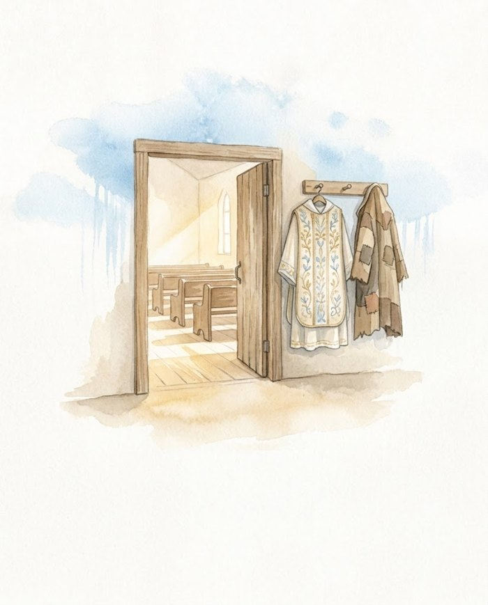

질문 100 · 바이블캐스트톡
궁금한 게 있나요?
질문하면 답해 드려요
성도도, 아직 교회가 낯선 분도 괜찮아요. 남겨 주신 질문은 목사님이 읽고, 매주 금요일 바이블캐스트톡과 이 창에서 답해 드립니다.
이번 주 답변
Q.1 / 100 10/23(금) 20:00 공개 영상으로 보기 · 0:54
영상으로 보기 · 0:54성도 질문 · 기도기도해도 응답이 없어요. 제 기도는 안 들으시는 걸까요?
진행 조아름 · 바이블캐스트톡
쇼츠로 먼저 들어 보세요
응답이 없는 게 아니라, 아직 내가 원한 답이 아닐 수 있어요.
하나님의 응답은 ‘예’만 있지 않아요. ‘아니’도, ‘조금만 기다려’도 응답이에요. 그리고 기도의 첫 열매는, 상황보다 내 마음이 먼저 바뀌는 거예요.
그리하면 모든 지각에 뛰어난 하나님의 평강이 그리스도 예수 안에서 너희 마음과 생각을 지키시리라빌립보서 4:7 · 개역한글
오늘 할 일 · 원하는 걸 말하기 전에, 지금 내 마음을 그대로 하나님께 한 줄로 말해 보세요.
다음에 답할 질문
- 크리스천은 왜 말과 행동이 달라요? Q.2 · 10/30(금)
- 하나님 계신데 왜 고통이 있어요? Q.3 · 11/6(금)
- 교회 안 다니고 혼자 믿으면 안 돼요? Q.4 · 11/13(금)
오늘의 한 편 · 매일 오전 7시
한국 교회 트렌드 2027
유튜브에 올라간 쇼츠를 그대로 모았습니다.


이번 주 말씀 · 매일성경 주일 본문
차별 없는 자리
야고보서 2:1-13 · 조성민 담임목사
말씀의 흐름
- 금 가락지와 남루한 옷 앞에서 갈리는 자리
- 가난한 자를 택하사 믿음에 부요하게 하신 하나님
- 최고의 법, 이웃 사랑과 심판을 이기는 긍휼
묵상
야고보는 옷차림과 형편으로 자리를 나누는 것을 '죄'라고 부릅니다. 하나님은 세상이 업신여기는 가난한 자를 택하사 믿음에 부요하게 하셨습니다. 교회 문을 들어서는 누구에게나 같은 자리와 같은 환대를 내어 주며, 심판을 이기는 긍휼로 살아갑니다.


 크리스찬 갤러리
크리스찬 갤러리
갓페인터 뮤지움 Godpainter's Museum
믿음에서 시작된 작품과 크리스천 아티스트가 만나는 열린 온라인 갤러리

함께 섬기는 자리
직함보다 은사로 섬깁니다
- 예배 기도
- 성경 봉독
- 봉헌
- 찬양
- 영상 · 디자인
- 목소리
한 번만 함께해도 좋습니다. 카페나 교회 연락처로 알려 주세요.